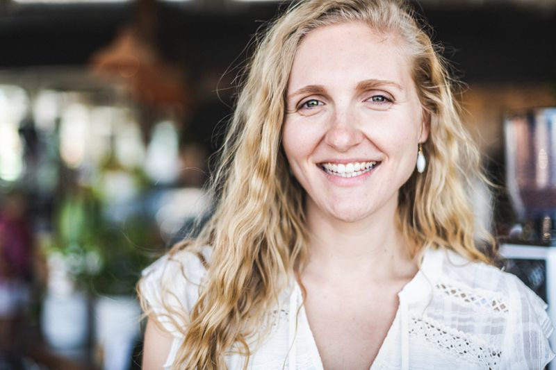
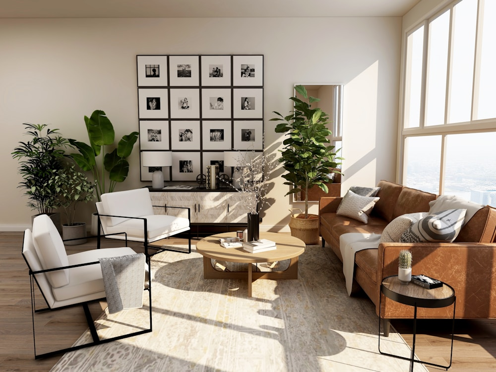
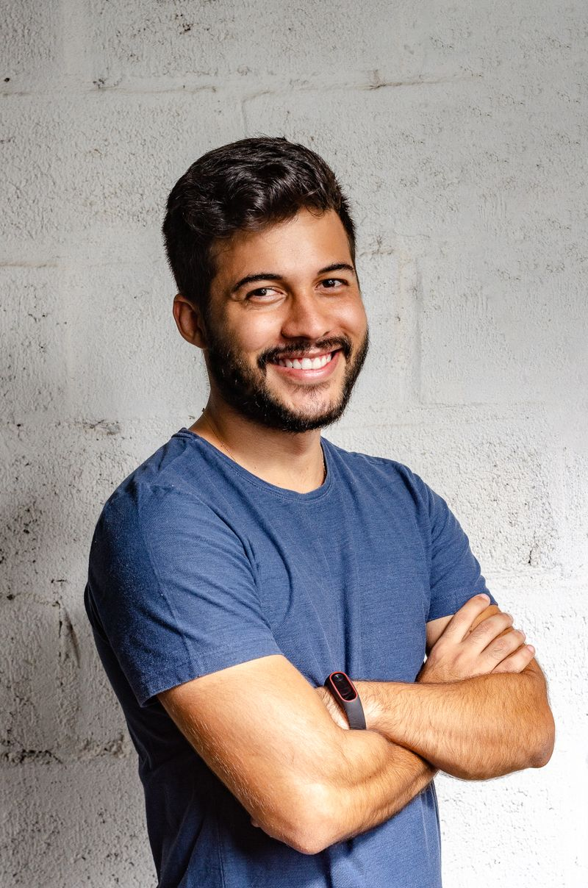

Hannah Ford
Founder & design lead
Meets every client, reads the room and shapes the brief for the studio.
The people behind the finish
We’re DrapeCraft: a local curtain studio making the custom process feel simple, personal and right at home.
Our mission
We want custom curtains to be the easiest, most personal part of making a home: measured properly, stitched beautifully and fitted without the fuss.
One studio and one team, from your first swatch to the final fold.
Fabric and lining chosen for how your room actually uses daylight.
Measured on site, so every panel hangs exactly as it should.
Quality stitching and hardware that keep their shape for years.

Our approach
Every home has its own light, proportions and rhythms. We start with a conversation in your space, understand what matters to you, and help you choose fabrics and finishes that make everyday living better.
From precise measurements to considered stitching and a careful installation, we look after the details so your curtains feel effortless once they’re in place.
Meet us at homeWhat we believe
The team

Founder & design lead
Meets every client, reads the room and shapes the brief for the studio.
Measuring specialist
Marks up every window on site, including the awkward ones.
Stitching lead
Hems, headings and linings finished by hand in our workroom.

Installation lead
Hangs tracks and rods neatly, then checks every fold before leaving.
A thoughtful service, every step
Swatches and advice in your own light.
Professional measuring and custom stitching.
Thoughtful installation and a final check.